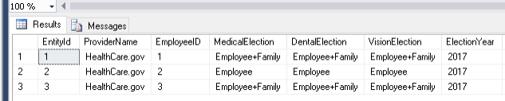

Step 1 - Create the Temporal Table
In this step we will create the Benefits table in the HumanRecoures schema and turn on versioning for a history table. What is important to remember is that the datetime2 data type must be used when creating temporal tables.
CREATE TABLE HUMANRESOURCES.BENEFITS
(
ENTITYID INT NOT NULL PRIMARY KEY CLUSTERED,
PROVIDERNAME NVARCHAR(100) NOT NULL,
EMPLOYEEID INT NOT NULL,
MEDICALELECTION VARCHAR(100) NOT NULL,
DENTALELECTION VARCHAR(100) NOT NULL,
VISIONELECTION VARCHAR(100) NOT NULL,
ELECTIONYEAR VARCHAR(4) NOT NULL,
STARTTIME DATETIME2 GENERATED ALWAYS AS ROW START
NOT NULL,
ENDTIME DATETIME2 GENERATED ALWAYS AS ROW END
NOT NULL,
PERIOD FOR SYSTEM_TIME (STARTTIME, ENDTIME)
)
WITH(
SYSTEM_VERSIONING= ON
(HISTORY_TABLE=HUMANRESOURCES.BENEFITSHISTORY))
GO
|
 |
Step 2 - Insert Sample Data
In this step, we are going to insert some sample data. The sample data is the current employees elections for the year 2017. Employee number 2, only has benefits for himself in 2017.
INSERT INTO [HUMANRESOURCES].[BENEFITS] ([ENTITYID]
,[PROVIDERNAME],[EMPLOYEEID],[MEDICALELECTION]
,[DENTALELECTION],[VISIONELECTION],[ELECTIONYEAR])
SELECT 1,'HEALTHCARE.GOV',1,'EMPLOYEE+FAMILY'
,'EMPLOYEE+FAMILY','EMPLOYEE+FAMILY','2017'
GO
INSERT INTO [HUMANRESOURCES].[BENEFITS] ([ENTITYID]
,[PROVIDERNAME],[EMPLOYEEID],[MEDICALELECTION]
,[DENTALELECTION],[VISIONELECTION],[ELECTIONYEAR])
SELECT 2,'HEALTHCARE.GOV',2,'EMPLOYEE'
,'EMPLOYEE','EMPLOYEE','2017'
GO
INSERT INTO [HUMANRESOURCES].[BENEFITS] ([ENTITYID]
,[PROVIDERNAME],[EMPLOYEEID],[MEDICALELECTION]
,[DENTALELECTION],[VISIONELECTION],[ELECTIONYEAR])
SELECT 3,'HEALTHCARE.GOV',3,'EMPLOYEE+FAMILY'
,'EMPLOYEE+FAMILY','EMPLOYEE+FAMILY','2017'
GO
SELECT * FROM [HUMANRESOURCES].[BENEFITS]
|
|  |
Step 3 - Update Data in Benefits Table
In this step, our employee #2 was married in 2017 and will change their benefits to Employee+Spouse. This will create a record in the BenefitsHistory table that will be the vaild history record for this row. After the update, a record is inserted in the BenefitsHistory table. You will notice the EndTime of the record in the BenefitsHistory table matches the Startime of the Benefits table.
UPDATE [HUMANRESOURCES].[BENEFITS]
SET ELECTIONYEAR = '2017'
,MEDICALELECTION = 'EMPLOYEE+SPOUSE'
,DENTALELECTION = 'EMPLOYEE+SPOUSE'
,VISIONELECTION = 'EMPLOYEE+SPOUSE'
WHERE EMPLOYEEID = 2
GO
GO
SELECT * FROM [HUMANRESOURCES].[BENEFITS]
GO
SELECT * FROM [HUMANRESOURCES].[BENEFITSHISTORY]
GO
|
Step 4 - Update Data in Benefits Table, AGAIN!
To continue with our example, our employee #2 has had a child and now we need to update the election to Employee + Family. This will insert a record into the history table. Again, notice the Endtime will equal the StartTime of the active record.
UPDATE [HUMANRESOURCES].[BENEFITS]
SET ELECTIONYEAR = '2017'
,MEDICALELECTION = 'EMPLOYEE+FAMILY'
,DENTALELECTION = 'EMPLOYEE+FAMILY'
,VISIONELECTION = 'EMPLOYEE+FAMILY'
WHERE EMPLOYEEID = 2
GO
SELECT * FROM [HUMANRESOURCES].[BENEFITS]
GO
SELECT * FROM [HUMANRESOURCES].[BENEFITSHISTORY]
GO
|